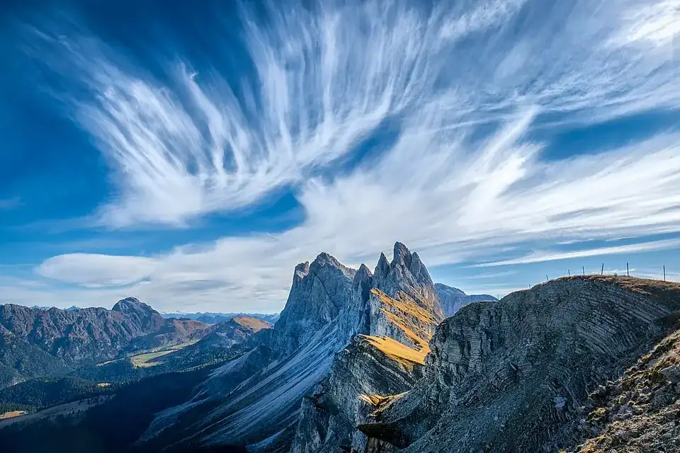

Топовые треки под ваши силы
Фото ключевых видов, краткое описание, дистанция, набор и сброс высоты, время и сложность. Чтобы заранее понять, какой маршрут подходит именно вам.
Расскажите, куда собираетесь. Мы соберём персональный интерактивный сайт, чтобы вы выбирали красивые маршруты, планировали переезды и знали, где остановиться по пути.
Готовый сайт с временной ссылкой на период вашего путешествия. Открывается в браузере телефона и компьютера.

Вместо списка ссылок — готовая подборка зрелищных треков с понятными характеристиками и переездами. Вы видите, как места расположены друг относительно друга, и собираете свой план.
Фото ключевых видов, краткое описание, дистанция, набор и сброс высоты, время и сложность. Чтобы заранее понять, какой маршрут подходит именно вам.
Удобные парковки, подъезд к старту, дороги между маршрутами и примерное время в пути. Ссылки для навигации и рекомендации по общественному транспорту.
Смотровые площадки, кафе, рестораны и хижины с кухней и высокими рейтингами. Где сделать паузу, пообедать и посмотреть ещё одну панораму.
Доступный прогноз на даты поездки, сезонные рекомендации, часы работы подъёмников и инфраструктуры, опубликованные ограничения дорог и троп.
Выбор треков на карте, точки с фотографиями, порядок посещения, сведения о переездах и подробности каждого маршрута — по примеру этого сайта.
Отдельный сайт под ваше путешествие по временной ссылке. Треки KML/GPX для совместимых приложений, включая Organic Maps, — если доступны данные для построения треков.
Регион, даты, сколько времени есть на прогулки, уровень подготовки и способ передвижения. Можно начать с одного города или района.
Уточним границы региона и пожелания, состав карты, срок подготовки и время доступа к сайту. Стоимость карты — 5.99 USD.
Получите временную ссылку на персональную карту. Смотрите виды, выбирайте треки, стройте переезды и делитесь планом со спутниками.
Не обязательно уже знать названия троп. Достаточно района и того, какой отдых вам хочется.
5.99 USD · персональный сайт для вашей поездки
Даты готовности и срок действия ссылки согласуются до оплаты. На этой странице деньги не списываются.
Персональный интерактивный сайт для согласованного региона: подборку лучших подходящих треков, фотографии, характеристики, переезды и полезные остановки. Количество маршрутов и детализация зависят от района, вашего времени и доступности достоверных источников; состав согласуем заранее.
Сайт создаётся под ваше путешествие и доступен по временной ссылке. Конкретные даты доступа и срок подготовки согласуются перед оплатой.
Сначала можно выбрать маршруты и спланировать переезды. Если прогноза на даты поездки ещё нет, будут сезонные ориентиры и ссылки для проверки погоды. Прогноз требует подключения к интернету.
Для графиков, цен и ограничений указываются источники и даты проверки. Если информация не подтверждена, это будет отмечено. Погода, состояние троп и работа инфраструктуры могут меняться; фактическое прохождение каждого трека не гарантируется.